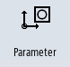

Measuring the workpiece zero
Procedure
|  | 1. | Select the "Parameters" operating area and press the "Zero offset" softkey. |
 | 2. | Press the "G54...G599" softkey and select the zero offset in which the zero point is to be saved. |
| | 3. | Press the "Workpiece zero" softkey. |
| | | You change to the "Set Edge" window in the "JOG" mode. |
| | 4. | Traverse the tool in the Z direction and scratch it. |
 | 5. | Enter the position setpoint of the workpiece edge Z0 and press the "Set ZO" softkey. |